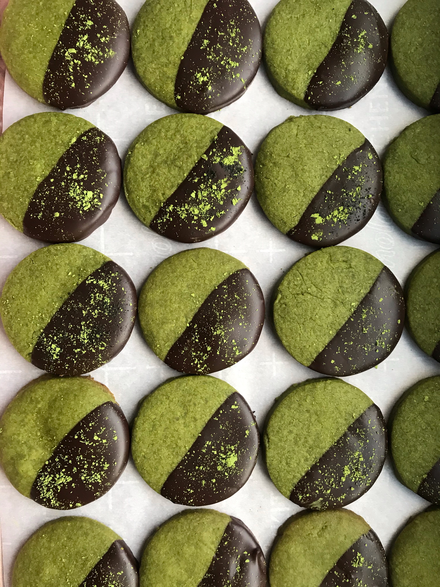
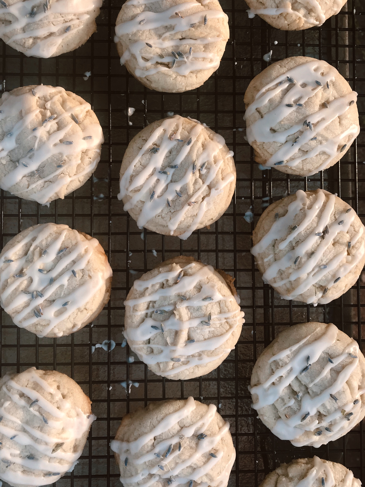
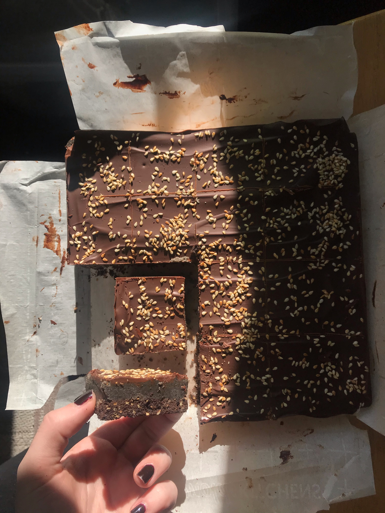

Chocolate Dipped Matcha Shortbread
Ingredients2 cups all purpose flour1-2 tbsp. matcha powder1/2 tsp. salt1 cup unsalted butter, room temperature 1/2 cup powdered sugar6 oz. bittersweet chocolateDirections 1. Sift flour, matcha powder, and salt into a mixing bowl 2. In a separate bowl, cream butter and sugar until light fluffy 3. Add flour mixture to creamed butter and sugar and mix until just combined 4. Gather dough into square, roughly 6x6 inches, and wrap in plastic. Freeze for 30 minutes, or until dough is firm to the touch.5. Roll dough into square, about 1/4 inch thick, and cut cookies with cutter. Placeon parchment lined baking sheet. 6. Bake in a 325 degree oven for 15-17 minutes, until bottoms just slightlybrowned. Let cool on wire rack.7. Chop 6 oz. bittersweet chocolate and melt in microwave, or over stove ina double boiler. Dip half of the cookie in the chocolate and let set before dustingwith matcha powder.
Lavender White Chocolate Cookies with Lemon Glaze
Ingredients3/4 cup unsalted butter, softened3/4 cup packed light brown sugar1/4 cup granulated sugar1 egg2 tsp vanilla extract1 tsp baking soda1/2 tsp salt2 tsp dried culinary lavender6 oz. white chocolate1 tbsp lemon juice1 cup powdered sugarDirections1. Cream together butter and both sugars until light and fluffy. Beat in egg and vanilla. 2. In a separate bowl, combine flour, baking soda, corn starch, salt, and lavender. Add to wet ingredients, beat on low until combined.3. Roughly chop white chocolate and fold into dough.4. Cover dough and chill for at least 1 hour. 5. Preheat oven to 350 degrees, roll dough into 1" balls. Place on baking sheet,spaced about 2 inches apart. Bake for 10-12 minutes, until edges are slightly golden.6. Place cookies on wire rack to cool. While cooling, combine powdered sugar and lemon juice to form the glaze.7. Once cooled, drizzle cookies with lemon glaze. Garnish with extra dried lavenderseeds.
 Blackout Tahini Billionaire Bars
Ingredients3/4 cup all purpose flour3/4 cup powdered sugar1/4 cup black cocoa1/3 cup toasted sesame seeds2 3/4 tsp kosher salt1 cup chilled unsalted butter2 large eggs1 1/4 cups packed light brown sugar 3/4 cup heavy cream1/2 black sesame paste1 tsp vanilla extract6 oz. bittersweet chocolateDirections1. Preheat oven to 350 degrees and line 8x8 baking pan with parchment paper.2. Whisk together flour, powdered sugar, cocoa powder, sesame seeds, and salt. Cut butter into 1/2" pieces and add to dry ingredients. Toss to coat in flour anduse your fingers to work in until pieces are about pea size.3. Separate eggs and add just yolks to flour mixture. Mix with a rubber or wooden spoon.4. Scrape dough into prepared 8x8 pan and press into even layer. Prick surface with a fork in several spots. Bake for 24-28 minutes.5. While Shortbread is cooling, combine remaining butter and brown sugar in saucepan over medium heat. Whisk in of heavy cream and 2 tsp salt. Bring to a boil and cook until thick.6. Remove from heat and add black sesame paste and vanilla. Pour butterscotch mixture over shortbread and let set.7. Coarsely chop chocolate and melt in microwave. Pour over butterscotch and spread evenly. Sprinkle surface with remaining sesame seeds. Chill bars until set, about 1-2 hours before slicing.